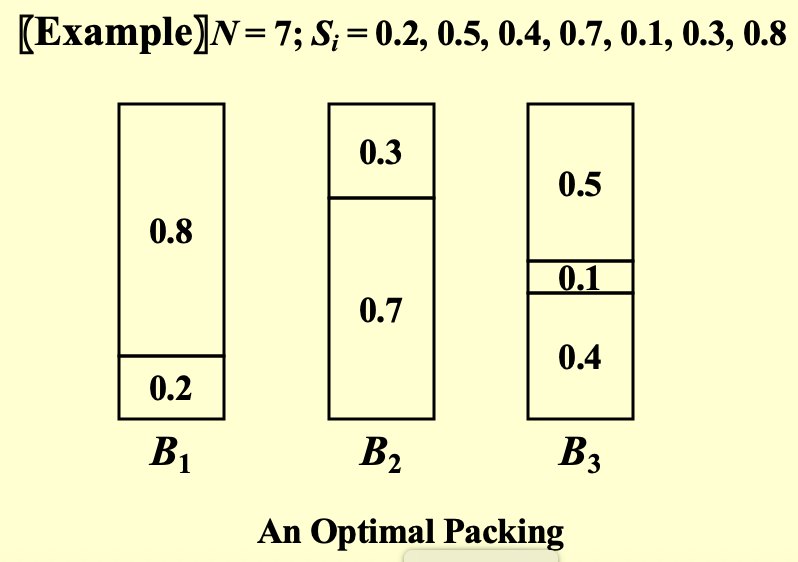
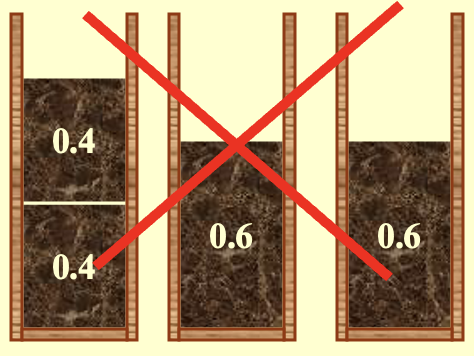
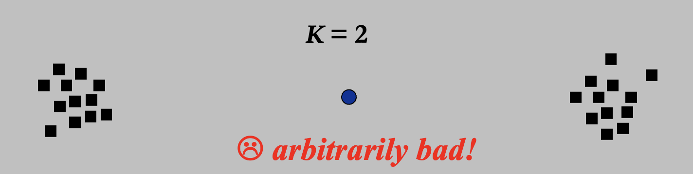

近似算法¶
Summary
算法设计通常需要在解的最优性、计算效率和适用实例范围之间进行权衡（即使 \(P=NP\)，也不可能三个方面都满足）
近似算法是在保证效率和普适性的前提下，牺牲部分最优性的一种方法
- 目的：解决困难问题
NP 完全
- 当 \(N\) 很小时，指数级复杂度 \(O(2^N)\) 是可以接受的
- 在多项式时间内可以解决某些重要的特殊情况
- 在多项式时间内找到近似最优解：近似算法
- 基本定义
-
近似比 \(\rho(n)\)：如果一个算法对于规模为 \(n\) 的任何输入，其产生解的成本 \(C\) 与最优解成本 \(C^{*}\) 的比值在因子 \(\rho(n)\) 之内，即
\[ \max\left(\frac{C}{C^{*}},\frac{C^{*}}{C}\right) \leq \rho(n) \]则该算法具有近似比 \(\rho(n)\)
-
如果一个算法达到了 \(\rho(n)\) 的近似比，我们称其为 \(\rho(n)\)-近似算法
- 近似方案：一种近似算法
- 定义：
- 输入：问题实例和一个参数 \(\epsilon > 0\)
- 使得对于任何固定的 \(\epsilon\)，该方案都是 \((1+\epsilon)\)-近似算法
- 分类：
- 多项式时间近似方案（PTAS）：
- 对于任何固定的 \(\epsilon > 0\)，该方案在其输入实例的规模 \(n\) 的多项式时间内运行
- e.g. \(O(n^{2/\epsilon})\)
- 完全多项式时间近似方案（FPTAS）：
- 运行时间关于 \(n\) 和 \(1/ε\) 都是多项式时间
- e.g. \(O((1/\epsilon)^2 n^3)\)
- 多项式时间近似方案（PTAS）：
- 定义：
近似装箱问题¶
- 问题：将 \(N\) 个大小不超过1的物品装入最少数量的单位容量箱子中
Example

- 在线算法
- 定义：在处理下一个物品之前放置一个物品，并且不能更改决定
-
Next Fit算法-
思路：只检查上一个箱子是否能存下下一个物品，如果不能，则新建一个箱子
-
定理：设 \(M\) 为打包物品列表 \(I\) 所需的最优箱子数，则
next fit使用的箱子数 \(\leq 2M – 1\) ，并且存在某些序列使得next fit使用 \(2M – 1\) 个箱子Proof
即证：如果
Next Fit生成了 \( 2M \)（或 \( 2M+1 \)）个箱子，那么最优解必须至少生成 \( M+1 \) 个箱子设 \( S(B_i) \) 为第 \( i \) 个箱子中物品的大小之和。那么必须有：
\[ \begin{gathered} S(B_1) + S(B_2) > 1 \\ S(B_3) + S(B_4) > 1 \\ \cdots\cdots\cdots \\ S(B_{2M-1}) + S(B_{2M}) > 1 \end{gathered} \]最优解至少需要 \(\lceil\)所有物品总大小/1\(\rceil\) 个箱子
\[ \lceil \sum_{i=1}^{2M} S(B_i) \rceil \geq M+1 \]
-
-
First Fit算法-
思路：扫描第一个能装下当前物品的箱子
-
时间复杂度： \(O(N \log N)\)
- 定理：设 \(M\) 为打包物品列表 \(I\) 所需的最优箱子数，则
first fit使用的箱子数 \(\leq 1.7M\) ，并且存在某些序列使得first fit使用 \(1.7(M-1)\) 个箱子
-
-
Best Fit算法- 思路：放入最紧的箱子（即能放下该物品并且剩余空间最小）
- 时间复杂度：\(O(N \log N)\)
- 使用的箱子数 \(\leq 1.7M\)
局限性
- 局限性：看不到全部数据（未来的数据），只能根据当前数据进行求解；永远不知道输入何时可能结束
- 没有在线算法总能给出最优解
- 定理：存在一些输入，迫使任何在线装箱算法使用至少 \(5/3\) 倍的最优箱子数
Example 1
其中 \(\epsilon = 0.001\)
- 最优解：需要6个箱子
- 但是所有三种在线算法都需要10个箱子
Example 2

- 离线算法
- 定义：在给出答案之前查看整个物品列表
- 麻烦制造者：大尺寸物品
First/Best Fit Decreasing算法：将物品按大小非递增序列排序，然后使用First/Best Fit算法- 定理：设 \(M\) 为打包物品列表 \(I\) 所需的最优箱子数，则
first fit decreasing使用的箱子数 \(\leq 11M/9+6/9\) ，并且存在某些序列使得first fit decreasing使用 \(11M/9+6/9\) 个箱子
背包问题¶
分数版本¶
- 问题：
- 有一个容量为 \(M\) 的待装背包，给定 \(N\) 个物品
- 每个物品 \(i\) 有一个重量 \(w_i\) 和一个利润 \(p_i\)
- 如果 \(x_i\) 是物品 \(i\) 被打包的百分比，那么打包该物品的利润将是 \(p_i x_i\)
- 求解背包中打包的物品能获得的最大利润
- 贪心策略：每次选择最大利润密度 \(pi/wi\) 的物品
Example
Problem: \(n=3, M=20,\, (p_1,p_2,p_3)=(25,24,15),\,(w_1,w_2,w_3)=(18,15,10)\)
Solution: \((x_1,x_2,x_3)=(0,1,1/2)\) 且 \(P=31.5\)
0-1/整数版本¶
Notice
- 整数版本的背包问题是NP-hard问题！！！
- 物品不可分割
- 贪心算法
贪心算法反例
贪心策略（按最大利润或利润密度）不能保证最优！！！
Example
Problem:
- \(n = 5\), \(M = 11\)
- \((p_1, p_2, p_3, p_4, p_5) = (1, 6, 18, 22, 28)\)
- \((w_1, w_2, w_3, w_4, w_5) = (1, 2, 5, 6, 7)\)
最优解：\((0, 0, 1, 1, 0)\), \(P = 40\)
贪心解：\((1, 1, 0, 0, 1)\), \(P = 35\)
- 近似比：贪心算法是2-近似的
证明
定义
- \(p_{max}\) = 单个物品的最大价值
- \(P_{opt}\) = 最优解的总价值
- \(P_{frac}\) = 分数背包问题的最优解总价值
- \(P_{greedy}\) = 0-1背包问题的贪心算法解的总价值
证明：已知
则
- 动态规划解法
-
\(W_{i,p}\) = 从前 \(i\) 个物品中恰好获取总利润 \(p\) 所需的最小重量
\[ W_{i,p} = \begin{cases} \infty & i = 0 \\ W_{i-1,p} & p_i > p \\ \min\{W_{i-1,p}, w_i + W_{i-1,p-p_i}\} & \text{其他情况} \end{cases} \]其中 \( i = 1, ..., n \) 且 \( p = 1, ..., n \, p_{\max}\)
-
时间复杂度：\(O(n^2 p_{max})\)
Notice
- 当利润值很大时，DP效率很低
-
解决方案：对利润值进行四舍五入，以精度换取效率
\[ (1 + \epsilon) P_{alg} \leq P \]其中 \(\epsilon\) 为精度系数，\(P_{alg}\) 为四舍五入之后算法的解，\(P\) 为实际解
K中心问题¶
- 问题定义：从 \(n\) 个站点中选择 \(K\) 个中心 \(C\) ，使得任意站点到其最近中心的最大距离（覆盖半径）最小
距离性质
- 自反性 \(dist(x,x)=0\)
- 对称性 \(dist(x,y)=dist(y,x)\)
- 三角不等式 \(dist(x,y)\leq dist(x,z)+dist(z,y)\)
- \(s_i\) 到最近中心的距离：\(dist(s_i,C)=min_{c \in C} \{dist(s_i,c)\}\)
- 最小覆盖半径：\(r(C)=max_i \{dist(s_i,C)\}\)
- 贪心算法（Greedy-Kcenter）
-
直觉贪心：将第一个中心放置在对于单个中心而言的最佳可能位置，然后持续添加中心，每次尽可能大地减少覆盖半径
Notice
对于单个中心可行；但是对于多个中心，效果非常差

-
Greedy-2r 判定算法：
- 步骤
- 猜测半径 \(r\)
- 反复从未覆盖集合 \(S'\) 里任选一个点 \(s\) 加入中心集 \(C\)，并删除所有距离 \(s\) 不超过 \(2r\) 的点
- 最后如果 \(|C|\leq K\) 则返回，否则报错
- 定理：若 Greedy-2r 选出了超过 \(K\) 个中心，则对任意 \(|C^*|\leq K\)，都有 \(r(C^*)>r\) （即半径 \(r\) 不可能实现 K-center 覆盖）
- 该贪心算法是2-近似的：返回的解满足 \(r(C) \leq 2 \cdot r(C^*)\)
二分查找
设 \(0<r\leq r_{max}\)，二分查找猜 \(r\) 
- 每次调用 Greedy-2r
- 用半径 \(2r\) 能找到 \(≤K\) 个中心 → \(r\) 可能偏大，缩小上界
- \(r\) 太小，增大下界
- 最终得到区间 \(r_0<r\leq r_1\)
- 输出半径为 \(2r_1\) （因为是被证明可行的半径的下界）
- 步骤
-
Farthest-first 贪心：
- 步骤（在Greedy-2r 算法的基础上改变）
- 任意选择一个点作为第一个中心
- 接下来每次选择距离当前中心集合最远的点作为下一个中心，直到选出 \(K\) 个中心
- 该贪心算法仍然是2-近似的
- 步骤（在Greedy-2r 算法的基础上改变）
- 定理：除非 \(P = NP\)，否则不存在比2-近似算法更好的多项式时间算法